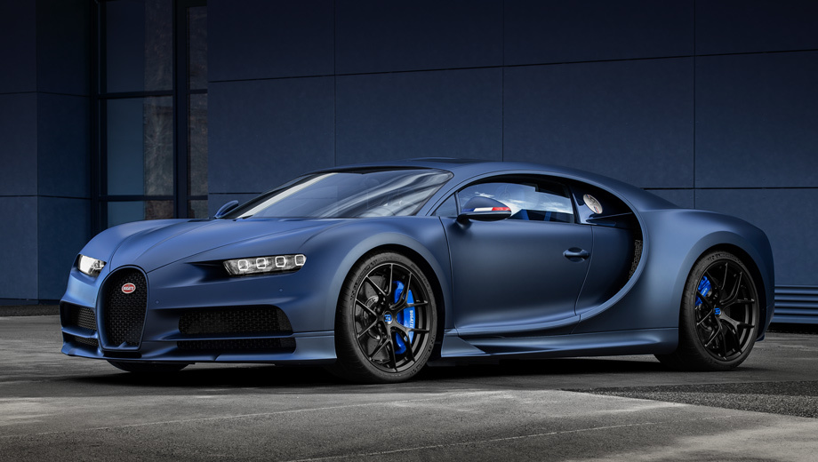

| BUGATTI CHIRON | BUGATTI VEYRON GRAND SPORT | BUGATTI VEYRON GRAND SPORT VITESSE |
|---|---|---|
| The cost of the Bugatti Chiron starts at $ 2.6 million, with a total of 500 copies, one third of which has already been sold. | The Bugatti Veyron 16.4 Super Sport World Record Edition is a version of the Bugatti Veyron 16.4 Super Sport. | The car reached a top speed of 409 km/h on Volkswagen’s private test track, in Ehra-Lessien, Germany. |
| The car is equipped with an 8-liter 16-cylinder engine of +1500 hp and a torque of 1,600 Nm for a locomotive accelerates this monster to 100 km / h in just 2.5 seconds. The maximum speed of the hypercar is 420 km / h. | It is limited to five units. It has an orange body detailing, orange wheels, and a special black exposed carbon body. The electronic limiter is also removed with this version. | The driver of the fleet Bugatti was Anthony Liu, a wealthy Chinese individual. |
| The body is made of carbon fiber, and the chassis has five modes of operation, designed for different speeds. | On 4 July 2010 James May, a television presenter on BBC Two's television show Top Gear, drove the Veyron Super Sport at 417.61 km/h | Only eight copies of the Bugatti Veyron Grand Sport Vitesse World Record Car Edition will be produced, at a price of nearly 2 million $. |